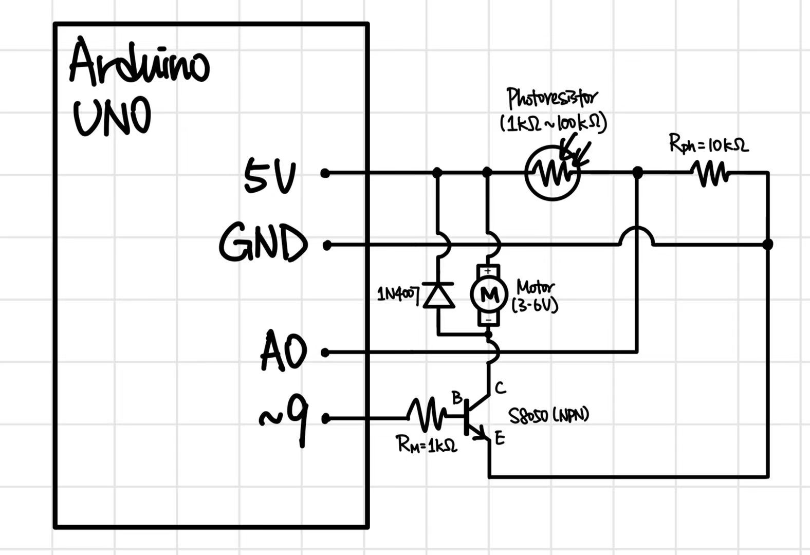
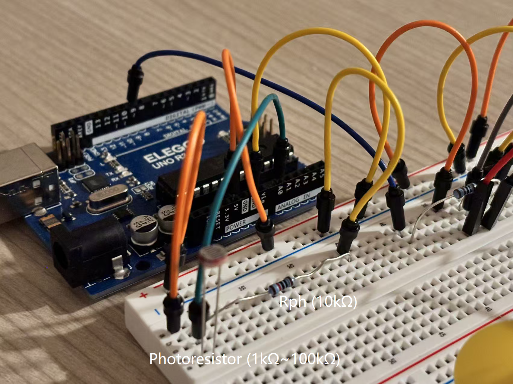
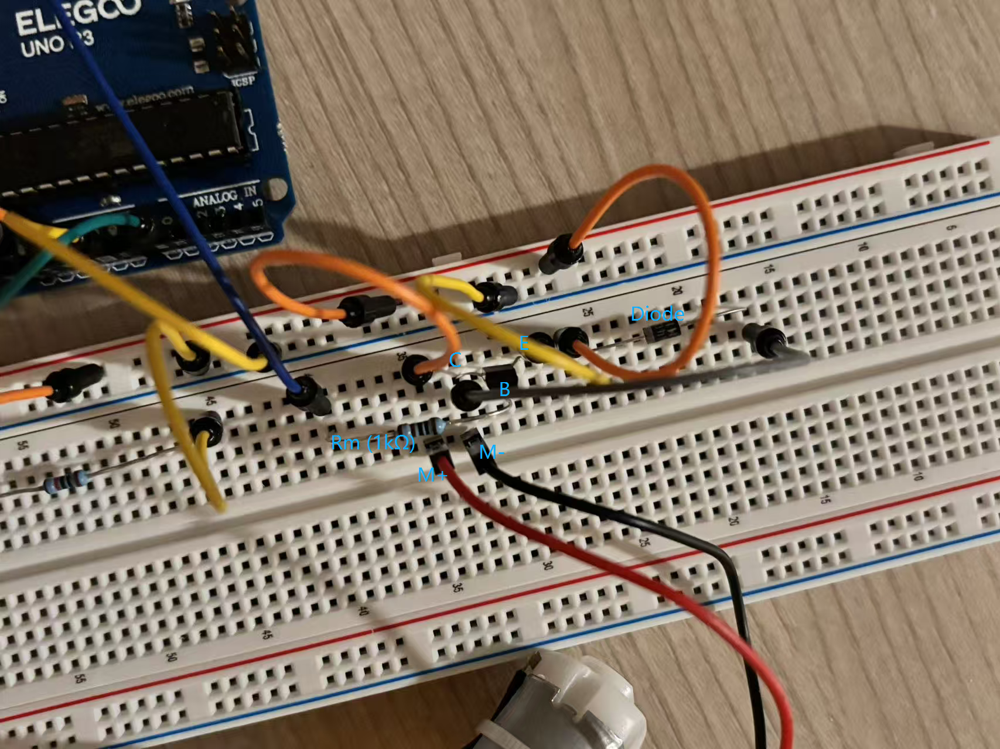
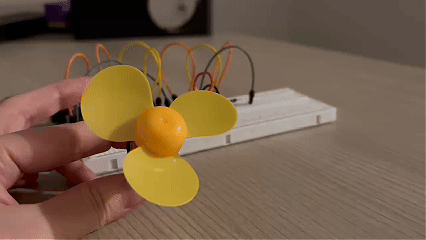
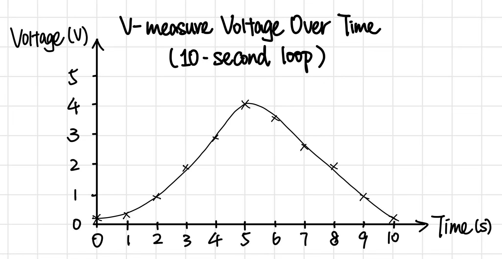

My circuit uses a photoresistor as the variable resistor in a voltage divider, and a small DC fan as the output device.
The fan is controlled by an S8050 NPN transistor, with a 1N4007 diode for protection.
For the photoresistor voltage divider, I used a 10kΩ fixed resistor. The photoresistor resistance ranges from about 1kΩ (bright light) to about 100kΩ (dark).
To find the best fixed resistor value, I used the geometric mean:
R_fixed = √(R_low × R_high) = √(1000Ω × 100000Ω) = √100000000 = 10000Ω = 10kΩ.
So I used a 10kΩ resistor. This keeps Vout roughly centered over the full light range.
The voltage divider output Vout is:
Vout = 5V × R_fixed / (R_photoresistor + R_fixed).
- In bright light (R_photo ≈ 1kΩ): Vout = 5 × 10000 / 11000 ≈ 4.55V → analogRead ≈ 930
- In darkness (R_photo ≈ 100kΩ): Vout = 5 × 10000 / 110000 ≈ 0.45V → analogRead ≈ 92
So the analogRead value ranges from about 92 (dark) to 930 (bright).
I used a 1kΩ resistor between Arduino pin 9 and the transistor base.
The base current is:
I_B = (5V − 0.7V) / 1000Ω ≈ 4.3mA.
This is well below the 40mA per-pin limit. It is also enough to fully turn on the S8050 transistor,
which can handle up to 700mA collector current — much more than the small fan needs (about 100–200mA).


// Analog pin A0 connected to the photoresistor voltage divider
int sensorPin = A0;
// Digital PWM pin 9 connected to the transistor base (controls fan speed)
int fanPin = 9;
// Setup runs once when the Arduino powers on
void setup() {
// Start serial communication at 9600 baud
Serial.begin(9600);
// Set the fan control pin as an output
pinMode(fanPin, OUTPUT);
}
// Loop runs over and over forever
void loop() {
// Read the photoresistor value from A0 (range 0 to 1023)
int sensorValue = analogRead(sensorPin);
// Map the 0-1023 sensor value to a 0-255 PWM value for the fan
int fanSpeed = map(sensorValue, 0, 1023, 0, 255);
// Write the PWM value to the fan pin to control fan speed
analogWrite(fanPin, fanSpeed);
// Print the label "sensor: " to the serial monitor
Serial.print("sensor: ");
// Print the raw photoresistor reading
Serial.print(sensorValue);
// Print a tab and the label "Fan speed: "
Serial.print("\t Fan speed: ");
// Print the mapped fan speed value and move to a new line
Serial.println(fanSpeed);
// Check if the sensor value is greater than 600 (bright condition)
if (sensorValue > 600) {
// Print a message indicating bright light and fast fan
Serial.println("Bright - fan fast");
} else {
// Print a message indicating dark condition and slow fan
Serial.println("Dark - fan slow");
}
// Wait 50 ms before the next reading for stability
delay(50);
}

The graph shows the PWM voltage across the LED (3.3V) for three analogWrite values.
